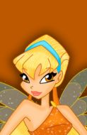

Selecione um personagem
- 
Bloom
Ela é a fada da Chama do Dragão. Tem poderes de cura, pirocinese (criar e mover fogo com a mente), controlar a magia do fogo, criar esferas de fogo e calor.
Ela é a fada da Chama do Dragão. Tem poderes de cura, pirocinese (criar e mover fogo com a mente), controlar a magia do fogo, criar esferas de fogo e calor.